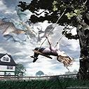

Forums galactiques > Assemblée Galactique : diplomatie officielle > [RP] Chroniques d'un dragon astral.
Pages : 1
| Dragon Astral Respect diplomatique : 13  24/06 ETU 22:32 | Score : 6 Détails ____________________________________________
"-Pensées." *Description narrative.* -paroles orales. ____________________________________________ "-Tout est si calme ici... Je peut encore voir quelque esprits égarés mais je ne peut désormais plus les guider vers le salut... Sont il destiner a errer dans ce plan qui n'est pas le leur jusqu'à la mort de leur corps matériel? Pardonnez moi, je ne suis plus un gardien en ce monde... Pourquoi m'avoir choisis moi? Il y a tellement d'autres dragons qui aurait été apte a cette tache et qui n'avaient aucun attachement... Leur contours sont de plus en plus floue, je m'éloigne de chez moi chaque seconde... Que va il m'arriver?" "-Vais-je avoir un corps matériel? Les rôles sont inversés a partir de ce jour, je n'apporte plus de réponses a ceux qui sont perdus, je suis celui qui pose les questions... Mais personne n'est la pour me donner de réponses... Sa y est, je ne vois plus rien... Tout est noir et je suis seul... Cette impression de tomber... Est elle normale? Ceux qui font le chemin inverse ne m'en ont jamais parler... Suis-je destiner a disparaître? Non, je vois quelque chose... Quel est ce décor étrange qui se dessine autour de moi? Le monde matériel ressemble a cela? Tout est si confus... Je peut voir ce qui est mais... Je ne peut plus voir ce qui se cache... Que se passe il?" "-Sa y est, je peut les voir! Ce sont les dragons du plan matériel? Je ne pensais pas les voir un jour, en un sens, c'est une chance que d'avoir été choisis! Je vais pouvoir séjourner chez eux un bon moment d'après ce que j'ai compris. Ils sont tout tellement différents les uns des autres d'apparence... Un peut comme nous mais encore bien plus marquer. Tien, un dragon bleu! Il ne me ressemble pas vraiment... Ces choses... C'est ce dont ceux que j'ai aider m'ont parler. Des arbres? C'est tout a fait comme l'on me l'a décrit... Ce plan est moin subtile mais il a ses propres charmes. Sa y est, ils m'ont vu. C'est étrange, ils ne semble qu'aucun d'entre eux n'est étonner par mon apparition... Les plus jeunes me regardent avec beaucoup de curiosité par contre...Ha, je m'y attendais... Je n'ai pas de forme physique... On dirais... De la brume... Même dans ce plan d'existence, je semble rester immatériel..." "-Tant de sensation nouvelles... Mon, enveloppe semble émule les propriétés d'un corps normal... Ce sont des odeurs étranges... Certaines ne semblent pas naturelles... Sans doute les pollutions dont j'ai entendu parler... Ils approchent... Ces dragons étaient ils au courent de ma venue? Je doit dire quelque chose de toute façon... Mais quoi? Bon, autant faire simple... Pourquoi avoir choisis quelqu'un d'aussi jeune que moi pou une tel mission..." -Heu... Salutations a vous, peuples du monde matériel. |
Pages : 1
Forums galactiques > Assemblée Galactique : diplomatie officielle > [RP] Chroniques d'un dragon astral.